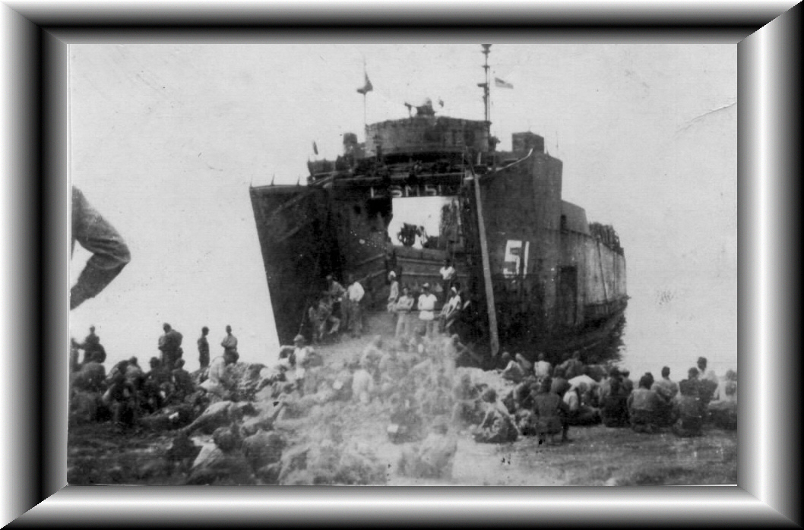

Still more Jap prisoners. We picked up several loads from Mindinao
and Los Negros.
Sure was better duty than having to fight them especially for the Army.
We usually had
an Army Doctor and Japanese Interperter on these trips, although some
times the
prisoners were already located in a temporary camp when we picked them
up.